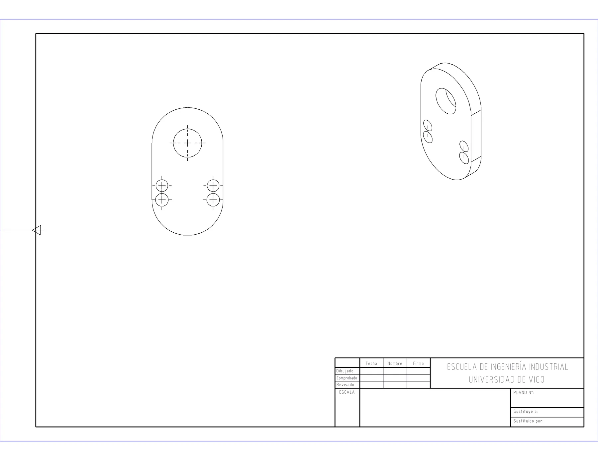
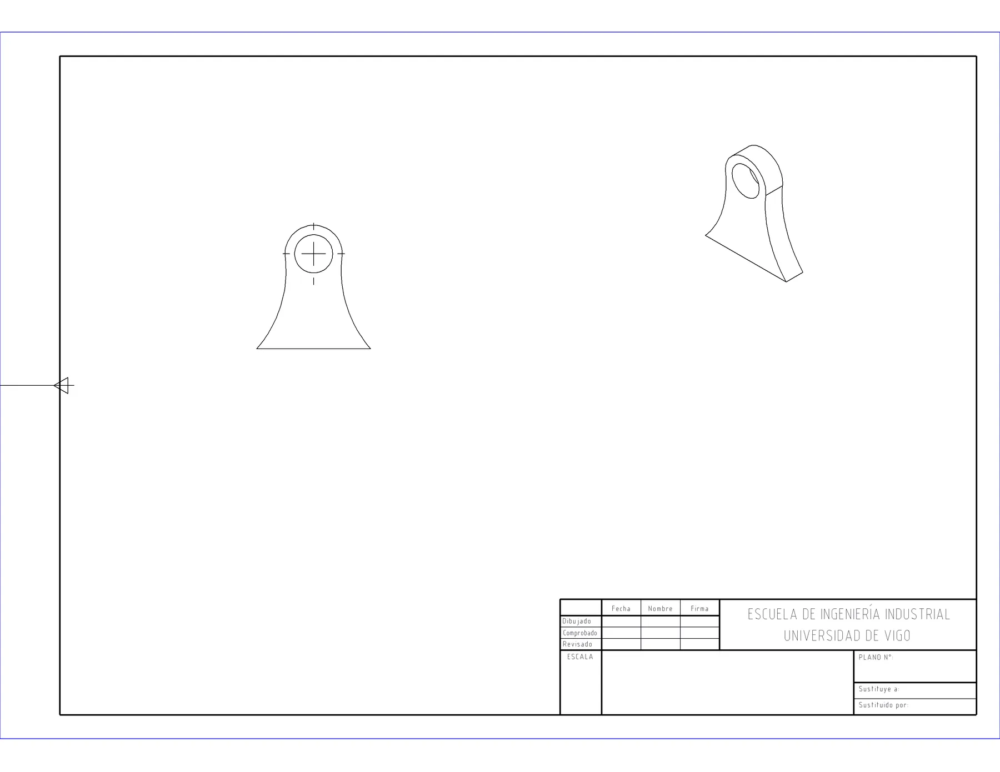

Caso 03 · Proyecto propio en desarrollo
Generar el plano de fabricación desde el modelo 3D sin dejar que la IA toque la geometría
Un motor en Python que, a partir de una pieza de SolidWorks, crea su plano 2D por la API del programa. Es la base sobre la que irá un asistente de IA.
8/8piezas del banco de pruebas con plano generado
3 vistasalzado, isométrica y sección opcional, con marcas de centro
ISO 273la normativa está en un fichero de datos aparte del código
- Tipo
- Proyecto propio de aprendizaje y portfolio, iniciado en julio de 2026
- Estado
- Fase 0 cerrada. Fase 1 en curso: el motor ya genera planos con vistas en las 8 piezas del banco de pruebas. La acotación y la capa de IA son las siguientes fases
- Autoría
- Propia. Desarrollado con agentes de IA (Claude Code y Codex) bajo mi especificación y verificación
El problema
Pasar de un modelo 3D a un plano de fabricación es trabajo repetitivo de oficina técnica: colocar vistas, elegir escala, acotar, rellenar el cajetín y exportar. Si se le pide a un modelo de lenguaje que lo haga moviendo la geometría, el resultado no es fiable ni repetible.
Qué hice
- Antes de programar, extraje los criterios de delineación de planos reales y elegí el banco de pruebas midiendo las piezas, no por su nombre.
- Construí, dirigiendo a Codex y Claude, un motor en Python que maneja SolidWorks por su API COM: crea el plano en una maqueta A3 fija, coloca el alzado con escala 1:1 preferente, la isométrica con su propia escala y las marcas de centro, sin invadir el cajetín, y lo exporta a PDF.
- Los agujeros de paso según ISO 273 están en un fichero de datos, no repartidos por el código.
- Para la capa de IA fijé una regla: la IA solo traducirá la intención a un JSON con un esquema cerrado, el motor lo ejecutará y las señales de verificación (reconstrucción, errores legibles, comprobación de norma) volverán a la IA para que se corrija. La IA nunca hará llamadas directas a la geometría.
Lo que se torció y cómo lo resolví
- Las vistas se salían del marco por el margen izquierdo. Corregí el cálculo del área útil.
- Las isométricas salían demasiado pequeñas porque su tamaño se estimaba como si fueran un cuadrado. Corregí la estimación.
- La detección de taladros fallaba con un error
DISP_E_MEMBERNOTFOUNDde la API COM. Se localizó la causa y se corrigió. - La vista de sección no sirve en todas las piezas, así que pasó a ser opcional (
--con-seccion) en lugar de ponerse por defecto.
Resultado actual
Así sale hoy un plano del motor, sin intervención manual. Todavía no lleva cotas ni el cajetín relleno: es el punto de partida de la siguiente fase.


Limitaciones y siguiente paso
- Falta la acotación automática, el relleno del cajetín, la lista de materiales y la exportación a DXF.
- Siguiente paso: acotar según norma y, después, manejar el motor en lenguaje natural mediante MCP.
Herramientas
- Python
- SolidWorks API (COM)
- pywin32
- Claude Code
- Codex
- ISO 273